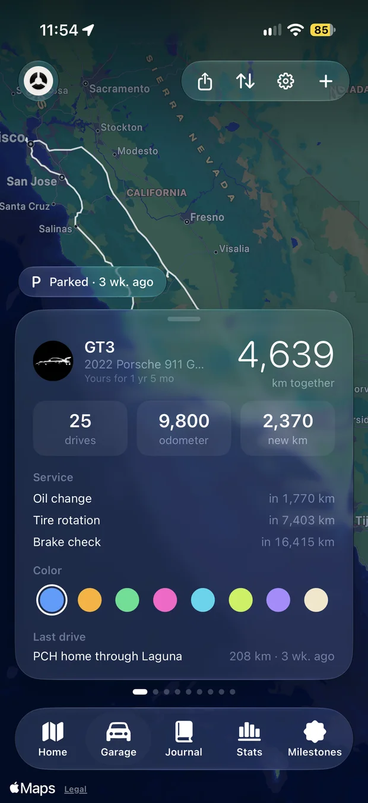
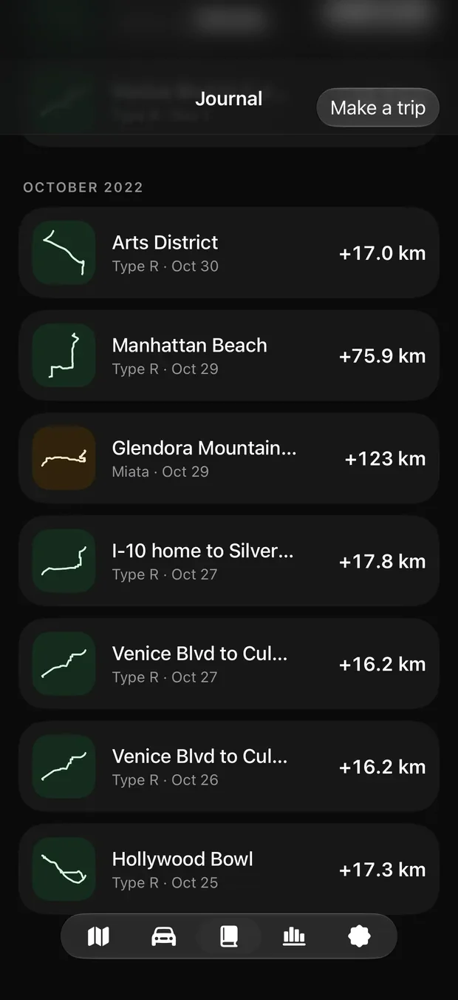
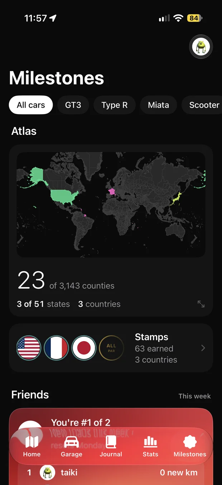
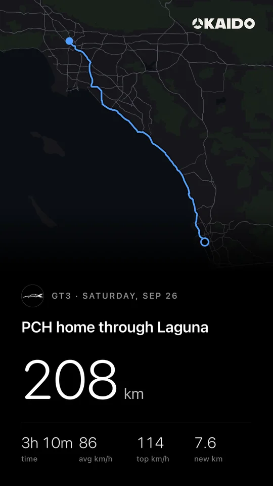
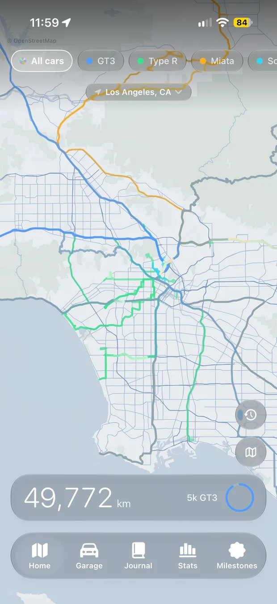
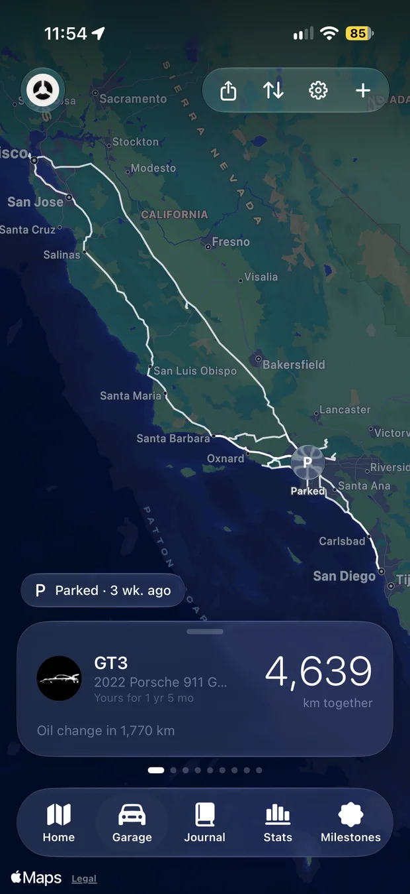

A logbook, not a game.
A small, independent iPhone app for people who love their cars and the roads.
Named for the old roads.
A kaidō is one of Japan's old highways. The most famous, the Tōkaidō, ran from Edo to Kyoto through fifty-three post stations, and travelers kept track of every one.
Kaido does the same for your car. Every drive is a stage, every new town a station, and the map is the record of the road you've traveled together.
The O in the name is a wheel cut in three. It's also the app's icon.
What Kaido won't do.
Rank you on speed.
Friends compare new roads, new counties and the longest trip. Nobody wins by driving fastest.
Make you sign up.
There's no Kaido account. Your drives sync through your own iCloud, and there's no password to forget.
Lock up your own drives.
Recording, your map and the Atlas stay free. Your trips are never held behind a paywall.
Track you for ads.
Kaido has no ads and no analytics trackers, and it never sells data or shares it with insurers.
Four screens, one logbook.






Made by one person.
Kaido is designed and built by Taiki Ishikawa. It began as a way to keep a record of his own drives, car by car, and grew into the app it is now.
There's no team behind a ticket queue. Every email to support reaches him, and most of the app's details started as someone's message.
Drive. It writes itself.
Kaido is in beta on TestFlight for iPhone. Ask for an invite and the link comes by email.
Join the beta